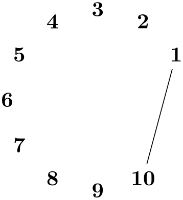

The TikZ and PGF Packages
Manual for version 3.1.10
Libraries
48 Chains¶
-
TikZ Library chains ¶
\usetikzlibrary{chains} %
LaTeX
and plain
TeX
\usetikzlibrary[chains] %
ConTeXt
This library defines options for creating chains.
48.1 Overview¶
Chains are sequences of nodes that are – typically – arranged in a row or a column and that are – typically – connected by edges. More generally, they can be used to position nodes of a branching network in a systematic manner. For the positioning of nodes in rows and columns you can also use matrices, see Section 20, but chains can also be used to describe the connections between nodes that have already been connected using, say, matrices. Thus, it often makes sense to use matrices for the positioning of elements and chains to describe the connections.
48.2 Starting and Continuing a Chain¶
Typically, you construct one chain at a time, but it is permissible to construct multiple chains simultaneously. In this case, the chains must be named differently and you must specify for each node which chain it belongs to.
The first step toward creating a chain is to use the start chain option.
-
/tikz/start chain=⟨chain name⟩⟨direction⟩(no default) ¶
-
/tikz/chain default direction=⟨direction⟩ (no default, initially going right) ¶
This key should, but need not, be given as an option to a scope enclosing all nodes of the chain. Typically, this will be a scope or the whole tikzpicture, but it might just be a path on which all nodes of the chain are found. If no ⟨chain name⟩ is given, the default value chain will be used instead.
The key starts a chain named ⟨chain name⟩ and makes it active, which means that it is currently being constructed. The start chain can be issued only once to activate a chain, inside a scope in which a chain is active you cannot use this option once more (for the same chain name). The chain stops being active at the end of the scope in which the start chain command was given.
Although chains are only locally active (that is, active inside the scope the start chain command was issued), the information concerning the chains is stored globally and it is possible to continue a chain after a scope has ended. For this, the continue chain option can be used, which allows you to reactivate an existing chain in another scope.
The ⟨direction⟩ is used to determine the placement rule for nodes on the chain. If it is omitted, the current value of the following key is used:
This ⟨direction⟩ is used in a chain option, if no other ⟨direction⟩ is specified.
The ⟨direction⟩ can have two different forms: going ⟨options⟩ or placed ⟨options⟩. The effect of these rules will be explained in the description of the on chain option. Right now, just remember that the ⟨direction⟩ you provide with the chain option applies to the whole chain.
Other than this, this key has no further effect. In particular, to place nodes on the chain, you must use the on chain option, described next.

\usetikzlibrary {chains}
\begin{tikzpicture}[start chain]
% The chain is called just "chain"
\node [on chain] {A};
\node [on chain] {B};
\node [on chain] {C};
\end{tikzpicture}

\usetikzlibrary {chains,scopes}
\begin{tikzpicture}
% Same as above, using the scope shorthand
{ [start chain]
\node [on chain] {A};
\node [on chain] {B};
\node [on chain] {C};
}
\end{tikzpicture}
\usetikzlibrary {chains}
\begin{tikzpicture}[start chain=1 going right,
start chain=2 going below,
node distance=5mm,
every node/.style=draw]
\node [on chain=1] {A};
\node [on chain=1] {B};
\node [on chain=1] {C};
\node [on chain=2] at
(0.5,-.5) {0};
\node [on chain=2] {1};
\node [on chain=2] {2};
\node [on chain=1] {D};
\end{tikzpicture}
-
/tikz/continue chain=⟨chain name⟩⟨direction⟩(no default) ¶
This option allows you to (re)activate an existing chain and to possibly change the default direction. If the chain name is missing, the name of the innermost activated chain is used. If no chain is activated, chain is used.
Let us have a look at the two different applications of this option. The first is to change the direction of a chain as it is being constructed. For this, just give this option somewhere inside the scope of the chain.
\usetikzlibrary {chains}
\begin{tikzpicture}[start chain=going right,node distance=5mm]
\node [draw,on chain] {Hello};
\node [draw,on chain] {World};
\node [draw,continue chain=going below,on chain] {,};
\node [draw,on chain] {this};
\node [draw,on chain] {is};
\end{tikzpicture}
The second application is to reactivate a chain after it “has already been closed down”.

\usetikzlibrary {chains,scopes}
\begin{tikzpicture}[node distance=5mm,
every node/.style=draw]
{ [start chain=1]
\node [on chain] {A};
\node [on chain] {B};
\node [on chain] {C};
}
{ [start chain=2 going below]
\node [on chain=2] at
(0.5,-.5) {0};
\node [on chain=2] {1};
\node [on chain=2] {2};
}
{ [continue chain=1]
\node [on chain] {D};
}
\end{tikzpicture}
48.3 Nodes on a Chain¶
-
/tikz/on chain=⟨chain name⟩⟨direction⟩(no default) ¶
-
1. An internal counter (there is one local counter for each chain) is increased. This counter reflects the current number of the node in the chain, where the first node is node 1, the second is node 2, and so on.
The value of this internal counter is globally stored in the macro \tikzchaincount.
-
2. If the node does not yet have a name, (having been given using the name option or the name-syntax), the name of the node is set to ⟨chain name⟩-⟨value of the internal chain counter⟩. For instance, if the chain is called nums, the first node would be named nums-1, the second nums-2, and so on. For the default chain name chain, the first node is named chain-1, the second chain-2, and so on.
-
3. Independently of whether the name has been provided automatically or via the name option, the name of the node is globally stored in the macro \tikzchaincurrent.
-
4. Except for the first node, the macro \tikzchainprevious is now globally set to the name of the node of the previous node on the chain. For the first node of the chain, this macro is globally set to the empty string.
-
5. Except possibly for the first node of the chain, the placement rule is now executed. The placement rule is just a TikZ option that is applied automatically to each node on the chain. Depending on the form of the ⟨direction⟩ parameter (either the locally given one or the one given to the start chain option), different things happen.
First, it makes a difference whether the ⟨direction⟩ starts with going or with placed. The difference is that in the first case, the placement rule is not applied to the first node of the chain, while in the second case the placement rule is applied also to this first node. The idea is that a going-direction indicates that we are “going somewhere relative to the previous node” whereas a placed indicates that we are “placing nodes according to their number”.
Independently of which form is used, the ⟨text⟩ inside ⟨direction⟩ that follows going or placed (separated by a compulsory space) can have two different effects:
-
(a) If it contains an equal sign, then this ⟨text⟩ is used as the placement rule, that is, it is simply executed.
-
(b) If it does not contain an equal sign, then ⟨text⟩=of \tikzchainprevious is used as the placement rule.
Note that in the first case, inside the ⟨text⟩ you have access to \tikzchainprevious and \tikzchaincount for doing your positioning calculations.

\usetikzlibrary {chains}
\begin{tikzpicture}[start chain=circle placed {at=(\tikzchaincount*30:1.5)}]
\foreach \i in {1,...,10}
\node [on chain] {\i};
\draw (circle-1) -- (circle-10);
\end{tikzpicture}
-
-
6. The following style is executed:
-
/tikz/every on chain(style, no value) ¶
This key is executed for every node on a chain, including the first one.
-
This key should be given as an option to a node. When the option is used, the ⟨chain name⟩ must be the name of a chain that has been started using the start chain option. If ⟨chain name⟩ is the empty string, the current value of the innermost activated chain is used. If this option is used several times for a node, only the last invocation “wins”. (To place a node on several chains, use the \chainin command repeatedly.)
The ⟨direction⟩ part is optional. If present, it sets the direction used for this node, otherwise the ⟨direction⟩ that was given to the original start chain option is used (or of the last continue chain option, which allows you to change this default).
The effects of this option are the following:
Recall that the standard placement rule has a form like right=of (\tikzchainprevious). This means that each new node is placed to the right of the previous one, spaced by the current value of node distance.
\usetikzlibrary {chains}
\begin{tikzpicture}[start chain,node distance=5mm]
\node [draw,on chain] {};
\node [draw,on chain] {Hallo};
\node [draw,on chain] {Welt};
\end{tikzpicture}
The optional ⟨direction⟩ allows us to temporarily change the direction in the middle of a chain:
\usetikzlibrary {chains}
\begin{tikzpicture}[start chain,node distance=5mm]
\node [draw,on chain] {Hello};
\node [draw,on chain] {World};
\node [draw,on chain=going below] {,};
\node [draw,on chain] {this};
\node [draw,on chain] {is};
\end{tikzpicture}
You can also use more complicated computations in the ⟨direction⟩:
\usetikzlibrary {chains}
\begin{tikzpicture}[start chain=going {at=(\tikzchainprevious),shift=(30:1)}]
\draw [help lines] (0,0) grid
(3,2);
\node [draw,on chain] {1};
\node [draw,on chain] {Hello};
\node [draw,on chain] {World};
\node [draw,on chain] {.};
\end{tikzpicture}
For each chain, two special “pseudo nodes” are created.
-
Predefined node ⟨chain name⟩-begin ¶
This node is the same as the first node on the chain. It is only defined after a first node has been defined.
-
Predefined node ⟨chain name⟩-end ¶
This node is the same as the (currently) last node on the chain. As the chain is extended, this node changes.
The on chain option can also be used, in conjunction with late options, to add an already existing node to a chain. The following command, which is only defined inside scopes where a start chain option is present, simplifies this process.
-
\chainin(⟨existing name⟩) [⟨options⟩] ¶
This command makes it easy to add a node to chain that has already been constructed. This node may even be part of a another chain.
When you say \chainin (some node);, the node some node must already exist. It will then be made part of the current chain. This does not mean that the node can be changed (it is already constructed, after all), but the join option can be used to join some node to the previous last node on the chain and subsequent nodes will be placed relative to some node.
It is permissible to give the on chain option inside the ⟨options⟩ in order to specify on which chain the node should be put.
This command is just a shortcut for
\path (⟨existing name⟩) [late options={on chain,every chain in,⟨options⟩}]
In particular, it is possible to continue to path after a \chainin command, though that does not seem very useful.
\usetikzlibrary {chains}
\begin{tikzpicture}[node distance=5mm,
every node/.style=draw,every join/.style=->]
\draw [help lines] (0,0) grid
(3,2);
\node[red] (existing) at
(0,2) {existing};
\begin{scope}[start chain]
\node [draw,on chain,join] {Hello};
\node [draw,on chain,join] {World};
\chainin (existing) [join];
\node [draw,on chain,join] {this};
\node [draw,on chain,join] {is};
\end{scope}
\end{tikzpicture}
Here is an example where nodes are positioned using a matrix and then connected using a chain
\usetikzlibrary {chains,matrix,scopes,shapes.geometric}
\begin{tikzpicture}[every node/.style=draw]
\matrix [matrix of nodes,column sep=5mm,row sep=5mm]
{
|(a)|
World
&
|(b) [circle]|
peace
\\
|(c)|
be
&
|(d) [isosceles triangle]|
would
\\
|(e) [ellipse]|
great
&
|(f)|
!
\\
};
% (the `scopes' library needs to be loaded to make the
following work)
{ [start chain,every on chain/.style={join=by
->}]
\chainin (a);
\chainin (b);
\chainin (d);
\chainin (c);
\chainin (e);
\chainin (f);
}
\end{tikzpicture}
48.4 Joining Nodes on a Chain¶
-
/tikz/join=with ⟨with⟩ by ⟨options⟩(no default) ¶
-
/tikz/every join(style, no value) ¶
When this key is given to any node on a chain (except possibly for the first node), an edge command is added after the node. The with part specifies which node should be used for the start point of the edge; if the with part is omitted, the \tikzchainprevious is used. This edge command gets the ⟨options⟩ as parameter and the current node as its target. If there is no previous node and no with is given, no edge command gets executed.
This style is executed each time this command is used.
Note that it makes sense to call this option several times for a node, in order to connect it to several nodes. This is especially useful for joining in branches, see the next section.
\usetikzlibrary {chains}
\begin{tikzpicture}[start chain,node distance=5mm,
every join/.style={->,red}]
\node [draw,on chain,join] {};
\node [draw,on chain,join] {Hallo};
\node [draw,on chain,join] {Welt};
\node [draw,on chain=going below,
join,join=with chain-1
by {blue,<-}] {foo};
\end{tikzpicture}
48.5 Branches¶
A branch is a chain that (typically only temporarily) extends an existing chain. The idea is the following: Suppose we are constructing a chain and at some node x there is a fork. In this case, one (or even more) branches starts at this fork. For each branch a chain is created, but the first node on this chain should be x. For this, it is useful to use \chainin on the node x to make it part of the different branch chains and to name the branch chains in some way that reflects the name of the main chain.
The start branch option provides a shorthand for doing exactly what was just described.
-
/tikz/start branch=⟨branch name⟩⟨direction⟩(no default) ¶
-
• This option may only be used if some chain is already active and there is a (last) node on this chain. Let us call this node the ⟨fork node⟩.
-
• The chain is not just called ⟨branch name⟩, but ⟨current chain⟩/⟨branch name⟩. For instance, if the ⟨fork node⟩ is part of the chain called trunk and the ⟨branch name⟩ is set to left, the complete chain name of the branch is trunk/left. The ⟨branch name⟩ must be given, there is no default value.
-
• The ⟨fork node⟩ is automatically “chained into” the branch chain as its first node. Thus, for the first node on the branch that you provide, the join option will cause it to be connected to the fork node.
This key is used in the same manner as the start chain command, however, the effect is slightly different:
\usetikzlibrary {chains,scopes}
\begin{tikzpicture}[every on chain/.style=join,every join/.style=->,
node distance=2mm and 1cm]
{ [start chain=trunk]
\node [on chain] {A};
\node [on chain] {B};
{ [start branch=numbers going
below]
\node [on chain] {1};
\node [on chain] {2};
\node [on chain] {3};
}
{ [start branch=greek going
above]
\node [on chain] {$\alpha$};
\node [on chain] {$\beta$};
\node [on chain] {$\gamma$};
}
\node [on chain,join=with trunk/numbers-end,join=with trunk/greek-end] {C};
{ [start branch=symbols going
below]
\node [on chain] {$\star$};
\node [on chain] {$\circ$};
\node [on chain] {$\int$};
}
}
\end{tikzpicture}
-
/tikz/continue branch=⟨branch name⟩⟨direction⟩(no default) ¶
This option works like the continue chain option, only ⟨current chain⟩/⟨branch name⟩ is used as the chain name, rather than just ⟨branch name⟩.
\usetikzlibrary {chains,scopes}
\begin{tikzpicture}[every on chain/.style=join,every join/.style=->,
node distance=2mm and 1cm]
{ [start chain=trunk]
\node [on chain] {A};
\node [on chain] {B};
{ [start branch=numbers going
below] } % just a declaration,
{ [start branch=greek going
above] } % we will come back later
\node [on chain] {C};
% Now come the branches...
{ [continue branch=numbers]
\node [on chain] {1};
\node [on chain] {2};
}
{ [continue branch=greek]
\node [on chain] {$\alpha$};
\node [on chain] {$\beta$};
}
}
\end{tikzpicture}